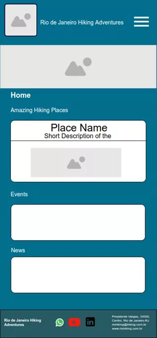
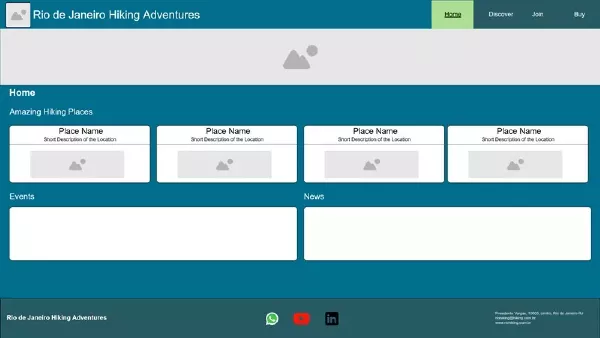

Rio de Janeiro Hiking Company
Site Name: Rio de Janeiro Hiking Adventures
Description: Rio de Janeiro Hiking Adventures is a website for lovers of this sport, who seek close contact with nature, see natural beauty, learn about the peculiarities of the areas visited, find out about news and events, find and buy products for practicing Hiking.
Site Purpose
The site aims to provide an amazing hiking experience, offering curated guides, reviews of city attractions, and a forum for users to share their experiences.
Scenarios
- What are the best hiking places in Rio de Janeiro?
- I'm a beginner, where can I find support to start hiking?
- Where can I find products for hiking?
- Where to find news and events?
Color Schema
Primary Colors:
- Blue: Used for headers and footer background.
- Green: Used for main background.
- Yellow: Used for scenario section background.
- White: Used for text.
- Black: Used for footer text and borders.
Typography
Font 1 (Primary): Arial - Used for body text and headers.
Font 2 (Optional): Georgia - Used for special quotes or featured content.
Wireframe
Mobile View:
Desktop View:
